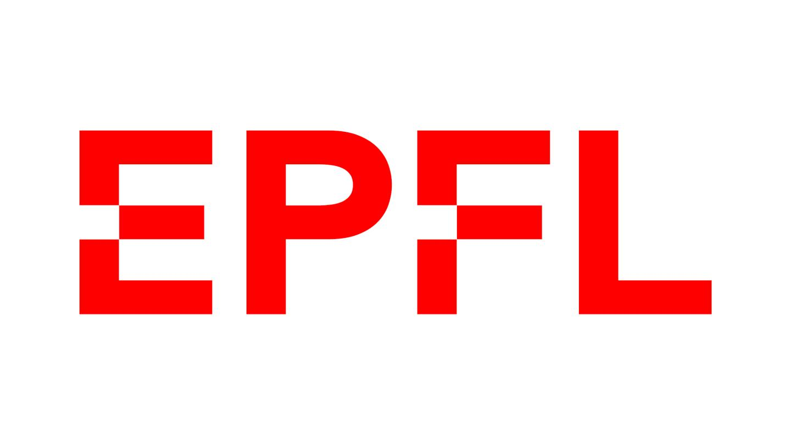

João Ramalho
Senior Data Scientist
Contact
ramalho.joao @protonmail.com +41 76 561 9577
Rue Marterey 56, 1005 Lausanne
Portuguese, Swiss 07.05.1973
Professional Objectives
My current focus is industrial statistics. I support the development of more sustainable products by providing new insights with powerfull data science tools.
My experience in the manufacturing industry spans 22 years. Having held various positions in R&D, Operations and IT I have gathered a broad understanding of how consumer goods are conceived, industrialized and manufactured.

Professional Experience
2019 - present - Senior Data Scientist, Nestlé, SwitzerlandProviding advanced analytics on Product Development, Quality equipment validation and Manufacturing Process Improvement. Core member of the DATAnalytics network, contributing the development and implementation of data science tools and methods for global R&D.
2012 - 2018 - Packaging Group Leader, Nestlé, SwitzerlandLead a team of 4 project managers for Nescafé Dolce Gusto at the STC. Engineering, prototyping, testing and industrialisation of capsule components. Expertise in injected and thermoformed polypropylene and EVOH rigid parts and laminated and coated flexible films in PET and Aluminium.

Coordinating specialists in watch engineering, quality and production. Overall project management from brief through development to market launch. Expertise in machined micro-mechanical parts in steel and silicon. Strong knowledge on production processes of stamped, PVD and electroplated cases, bracelets and dials.

Lead a team of 5 operations experts and 2 IBM SAP consultants. Advisor for the World Class Maintenance program. On site support in Holland, Germany, Argentina, Brazil, Russia and Lithuania.
1998 - 2003 - Production Supervisor, Philip Morris, PortugalShift supervisor in 3x8h (factory operation with ~100 persons including production, maintenance and logistics). Daily troubleshooting on the shop floor in order to achieve the factory output of average 40 million parts, while ensuring quality and safety standards.

Education and Training
Data Science- 2021 - Data Science with R, 650h - EPFL extension school
- 2019 - Data Science with R, 89h (Cert.#124,072) - DataCamp
- 2017 - FMEA Failure modes analysis - Ariaq, Yverdon
- 2016 - DOE Design of Experiments - Nestlé, Orbe
- 2015 - SixSigma green belt project - DOQS, Neuchâtel
- 1998 - MSc. Mechanical Engineering, IST, Lisbon - IST
- 2018 - Emotional Intelligence for Leaders - Nestlé, Vevey
- 2011 - PMP - Project Management (Cred.#1471588) - PMI
Languages
near native
Frenchnear native
Portuguesenative
Programming skills
R - SQLite - bash - git - github - html - css - javascriptI'm actively coding in several software projects with my team and partner companies. I'm an advanced R programmer able to cover many aspects of the full stack from the database development up to the front end.